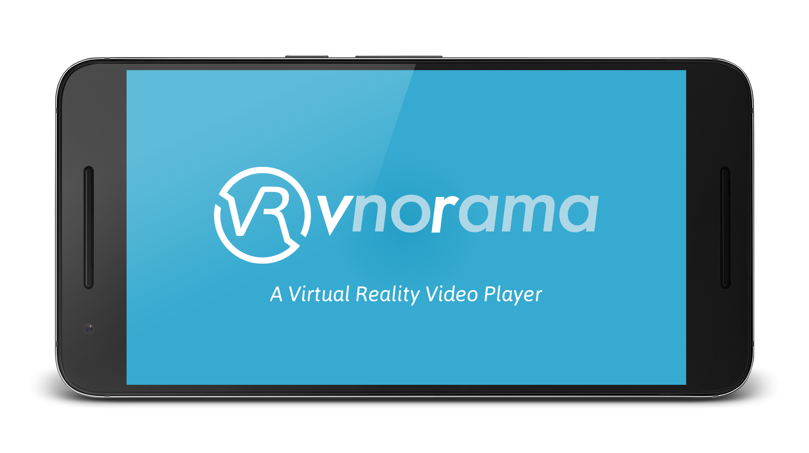
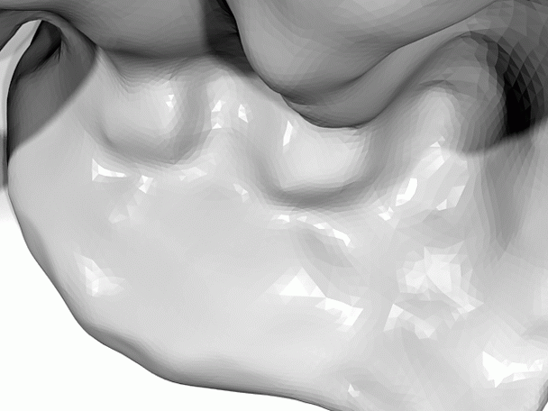

Projects
Virtual Reality
vnorama offers fully immersive playback of VR video, including 3D rendering and 180° or 360° field of view.
As of January 2018, the app is no longer maintained, neither by Vathos or by me personally. It will not be available on Google Play anymore, but feel free to download the latest APK if you are interested (make sure to allow installation from untrusted sources).
Virtual Try-On
This is the screen capture of a demo that I put together for a client of Vathos. I am real, the glasses are fake. The input data consist of a polygonal mesh model of my head and a stream of RGBD images recorded with an Intel RealSense camera. The tracking algorithm is implemented in GLSL and runs on the GPU in real time.
Real-Time Dense Variational Stereo
Joint work with Gottfried Graber
Shape Optimization
YAS
YAS is a software for the alignment of RGBD images recorded from a discrete set of vantage points and their integration into a common polygonal mesh model.
Numerical Conformal Maps
NURBS-based boundary element methods for the construction of conformal maps between two planar simply connected domains.